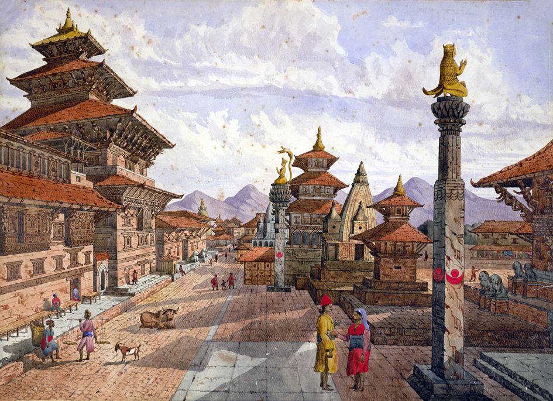

01
Patan Durbar Square
The royal palace complex and its surrounding temples form one of the most concentrated historic squares in Asia. Stone courtyards, carved windows, and temple facades open onto daily life — laundry lines, schoolchildren, and flower sellers.
View on Google Maps